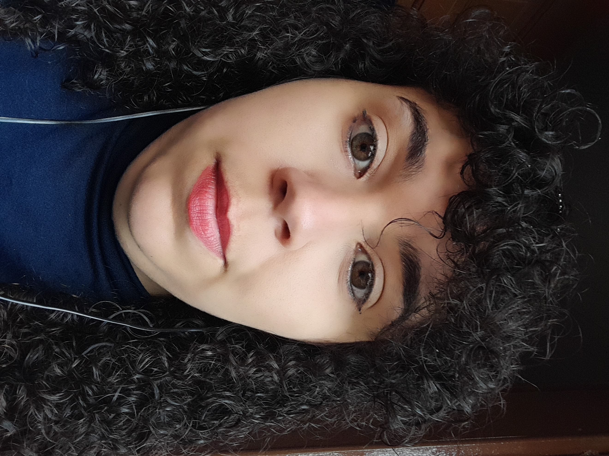
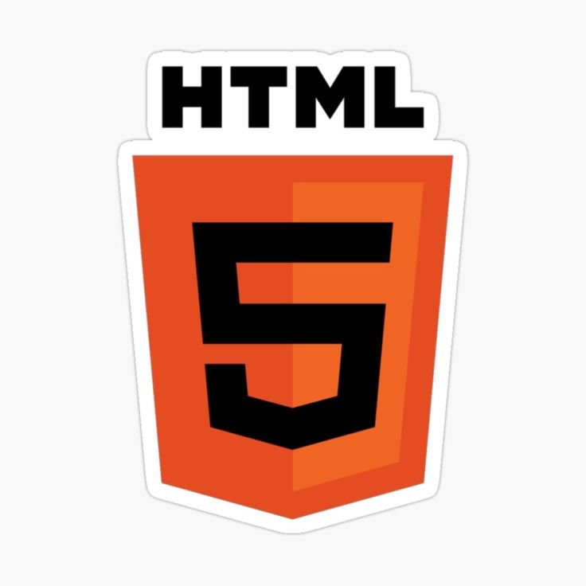
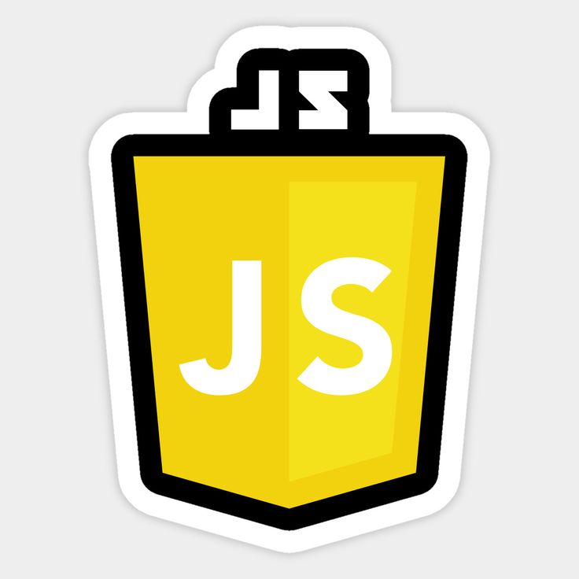
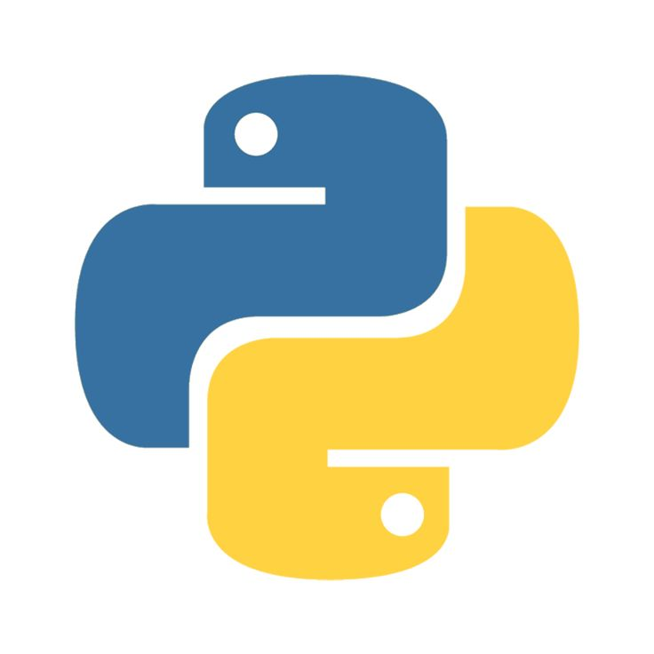

Sobre mim :)

Olá, eu sou a Ana Paula, tenho 26 anos e atualmente estou cursando Análise e Desenvolvimento de Sistemas na UniFatecie.
Sempre tive um grande amor pela tecnologia, e antes da faculdade começei meus estudos como autodidata em HTML/CSS. Eis as tecnologias que sei ou que estou me aprofundando:
Linguagens




Além disso, estudo a fundo sobre Inteligência Artificial e Aprendizado de Máquina, focado em automação e cibersegurança. Se quiser, você pode ver meu artigo científico sobre IA aqui
Projetos
Confira alguns dos meus projetos
Imersão Dev da AluraCriei um site sobre autores nacionais para o projeto da imersão dev da Alura no ano passado (2024)
Projeto de automação da Jornada Python
Gerador de certificados automáticos criado no bootcamp Jornada Python
Meu blog de cibersegurança
Site ainda em andamento onde pretendo tratar de conceitos de segurança da informação de forma simples e de clara compreensão, a fim de ajudar a comunidade a se proteger digitalmente e promover uma maior educação digitalmente
Quer ver mais projetos? Acesse meu perfil no GitHub
Gostou? Vamos marcar uma reunião? vai ser um prazer conversar com você!
Converse comigo pelo WhatsApp Me siga no meu instagram profissional!